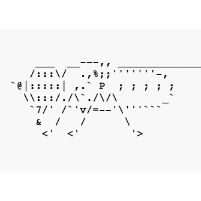
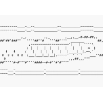
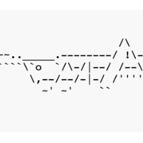
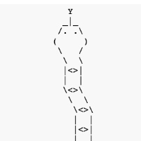
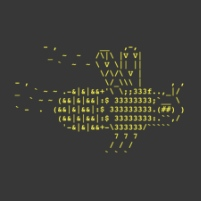
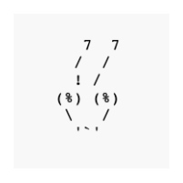
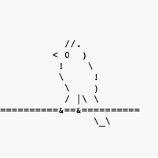

Art
A selection of ASCII images, drawings, and related works I've created over the years. Many of these show creatures or scenes I encountered during my insect fieldwork.
I may have updated the HTML and TXT versions of some of the following art with minor character substitutions since the JPG thumbnails and PNG files were made, so in those cases, the raster images are a snapshot in time rather than the most current versions of the art.
| Preview | Title | Description | File link(s) |
|---|---|---|---|
 | Fly | Lateral view of an adult fly at rest, maybe an agromyzid, with its wings folded. | |
 | Borer larva | The stylized larva is seen in a longitudinal section of its stem as it excavates its tunnel in the pith. Frass is accumulating behind it. | |
 | Katydid | Conehead katydids (genus Neoconocephalus) have been a favorite insect of mine for some time. I have enjoyed deciphering their songs and spotting the rare individual that makes itself visible to a curious human. This depiction shows a katydid in lateral view with its long antennae extended in front of it. | |
 | Snake | I have occasionally encountered timber rattlesnakes while looking for insects in the Upper Midwest. This one is shown in an active pose with its tongue out. | |
 | Bee | I created this bumblebee art in honor of a friend's rare sighting of Bombus perplexus while he was conducting biological surveys near where I live. | |
 | Bugface | A head-on view of an insect's face, perhaps a mantid. | |
 | Bird on a wire | The sparrow- or finch-like passerine is perched calmly on a thick wire. |


I have enjoyed drawing wildlife all my life. A few random sketches and other selections are included below. (These artistic approximations may not be completely anatomically correct.)
Drawings


An assortment of additional creations.
Miscellaneous

Page created: September 28, 2026. Last update: none